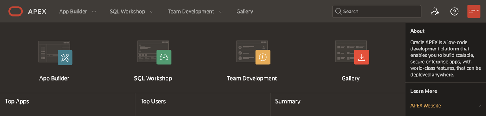

Oracle APEX
Oracle APEX (Oracle Application Express) is a low-code application development platform developed by Oracle Corporation. APEX is used for developing and deploying cloud, mobile and desktop applications. It has a web-based integrated development environment (IDE) that includes tools such as wizards, drag-and-drop layout builders, and property editors.
History
APEX was created by Oracle developer Michael Hichwa following his earlier project, WebDB. While building an internal web calendar, Hichwa collaborated with fellow Oracle employee Joel Kallman to develop Flows. Together, they co-developed the web calendar, adding features to Flows as they needed them to develop the calendar. Early builds of Flows had no front-end, so all changes to an application were made in SQL Plus via insert, update and delete commands. With version 5.2, the numbering system was changed to align with the year and quarter of the release, renaming it to 18.1. This change is consistent with Oracle's change in numbering nomenclature.